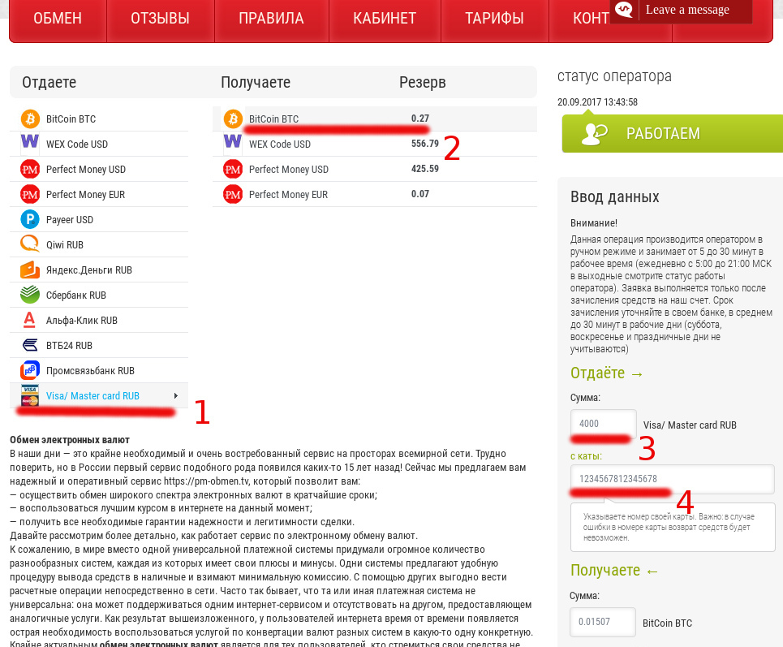
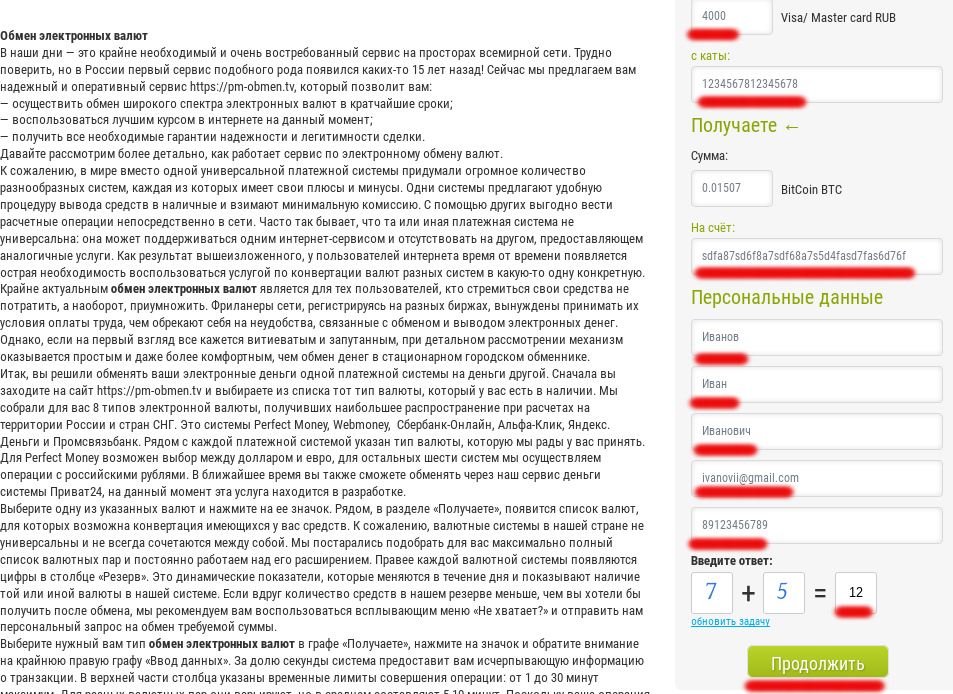
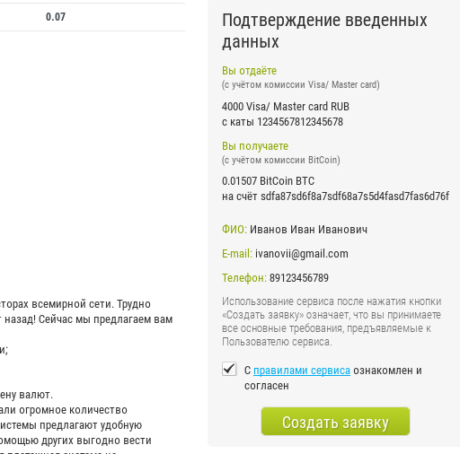
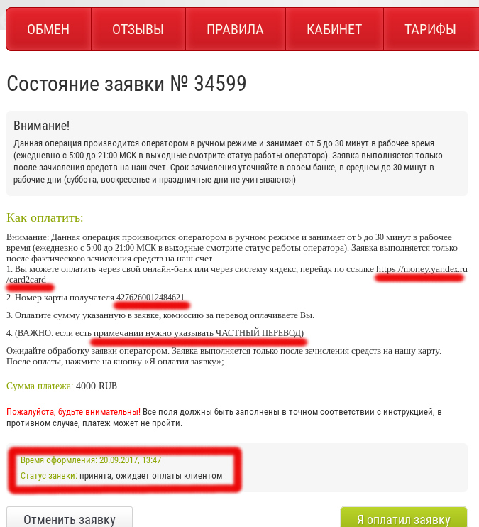
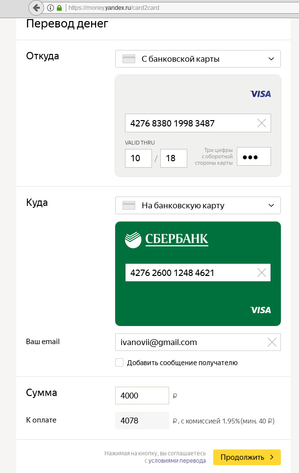

Превыше всего мы ценим приватность личной жизни наших клиентов.
Поэтому мы никогда не собираем личные данные наших посетителей, в частности –
данные банковских карт.
И поэтому мы принимаем оплату исключительно в анонимной криптовалюте – Bitcoin.
Как отплатить регистрационный взнос с помощью анонимной криптовалюты Bitcoin:
В этом нет ничего сложного, и процедура не займёт больше двух минут. Просто прочитай инструкцию, и у тебя всё получится!=)
Отправь перевод на сумму 1000 рублей (девушки), 3000 рублей (мужчины и пары) по нынешнему курсу
со своего биткоин-кошелька на кошелёк 1D9JgEDKmpPy5MccHgDgcoXtYmwhg3s8WW
Дальше всё просто, читать нашу инструкцию полностью не обязательно. Самые важные моменты мы выделили жирным шрифтом.
Если в двух словах, то:
1. В левом столбе выбери "Visa/ Master card RUB"
2. В правом - "BitCoin BTC"
3. Впиши Сумму перевода (леди - 1000 рублей, джентельмены - 3000, пары - 3000)
4. Впиши номер своей карты (номер карты особенно важно вписать без ошибок -
в случае проблем с переводом деньги вернутся на карту, номер которой ты впишешь!)
Не беспокойся, если число в поле "Сумма bitcoin BTC" будет отличаться - оно зависит от курса, это нормально.

-В поле "На счет" скопируй и вставь номер нашего bitcoin-кошелька: 1D9JgEDKmpPy5MccHgDgcoXtYmwhg3s8WW
-Впиши свои настоящие ФИО, электронную почту и телефон - они могут потребоваться, если возникнут проблемы с платежом.
Дальше всё просто - читай подсказки на сайте bitcoin-обменника.
Единственный важный момент - когда твоя заявка будет создана, скопируй Номер заявки и Время оформления в поле "Данные твоего регистрационного платежа"
-Мы не сможем получить твои ФИО и номер банковской карты от администрации bitcoin-обменника,
поэтому не беспокойся о своей анонимности! Мы защищаем твои личные данные даже от нас самих!:)
-Введи ответ на задачку и нажми "Продолжить"

-Проверь правильность данных (самые важные поля - "с карты", "на счет" и "e-mail".
-Поставь галочку "С правилами сервиса ознакомлен и согласен".
-Нажми "Создать заявку"

Скопируй номер заявки и время оформления в поле
"Данные твоего регистрационного платежа" в регистрационной форме на нашем сайте.
Далее следуй инструкции на сайте обменника:
1. Перейди по этой ссылке (откроется в новой вкладке): money.yandex.ru/card2card 
В поле "Куда" скопируй и вставь номер карты, указанный в пункте 2
инструкции на сайте обменника (он может отличаться от того,
который написан в нашей инструкции, это нормально).
Если увидишь поле "примечание" или "примечание к платежу" - введи "ЧАСТНЫЙ ПЛАТЁЖ". Нажми "Продолжить".
Введи код из смс.

Вернись на вкладку bitcoin-обменника, скопируй номер заявки и вставь его в поле "Данные регистрационного платежа",
нажми "Я оплатил заявку".
Дождись письма от bitcoin-обменника на свою электронную почту об успешном совершении перевода.
Поздравляем тебя, оплата заверешена успешно!
Вернись на наш сайт и введи в поле "Данные твоего регистрационного платежа" время оформления заявки
и номер заявки, если ты еще не вписал его.
Если возникнут сложности - не стесняйся, пиши нашему системному администратору на admin@this-hot.party